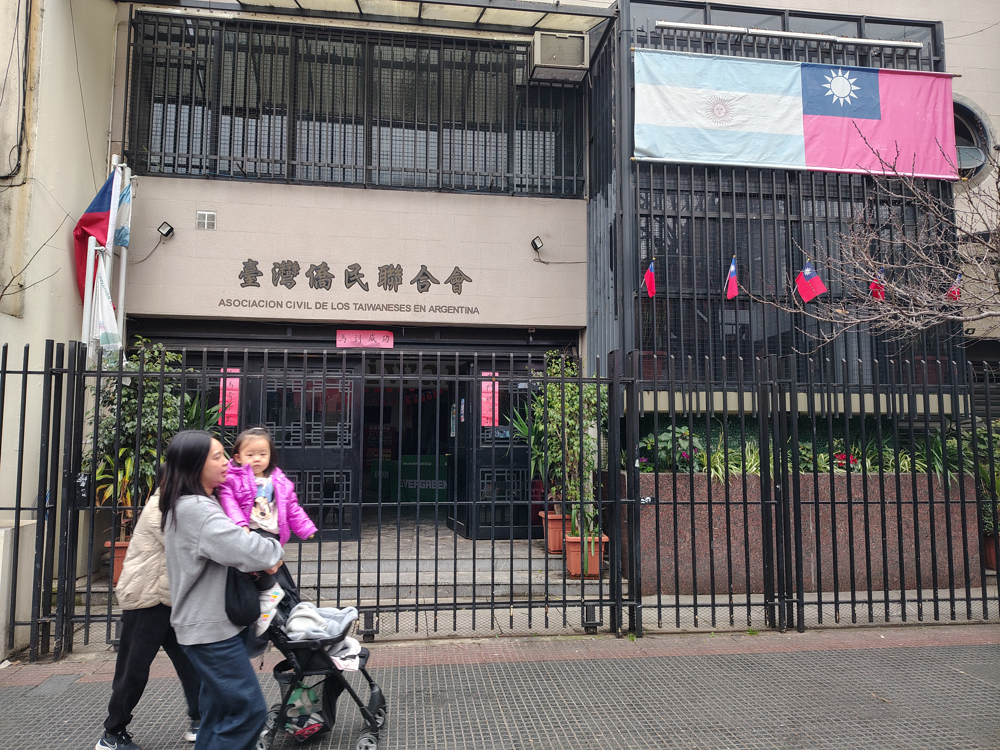

Historia

El barrio se origina hacia fines del siglo XX,durante la década de los 80, con la llegada de la inmigración taiwanesa que se instaló en la zona, principalmente con la fundación de la Iglesia Presbiteriana Sin Heng Nuevo Avivamiento, en Mendoza 1660. Junto con ellos también llegaron familias chinas y japonesas, que cambiaron rápidamente la fisonomía del barrio con la apertura de numerosos restaurantes de cocina asiática, locales a la calle e incluso uno de los primeros templos budistas de la ciudad
Página